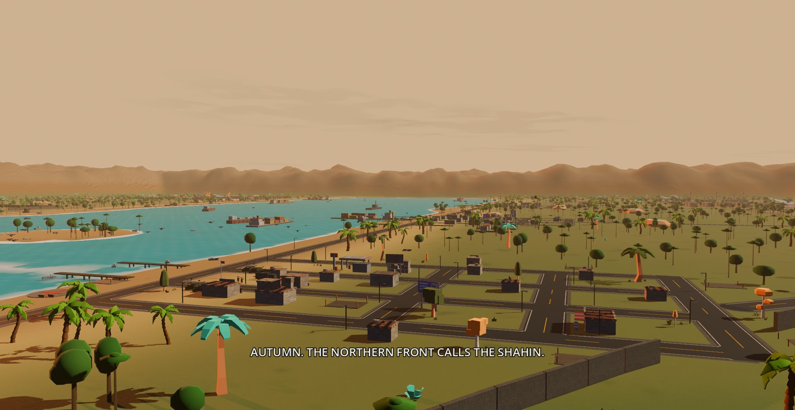

The campaign
One war, two colors.

Summer — Tangeh-ye Hormoz
THE STRAIT
Bandar-e Azadi is a working stronghold losing the production war. Carry the revolution through Deh-e Mahi, Bandargah, and Sahelabad — each liberated port raises its own gun and forge and joins the network. Cross the bay, break open the Zendan, and get the enriched material to ONAT without turning the coast to glass. The tide drains the Khoshki Bar on its own schedule, RA'D-O-BARQ surges it back, and every army that wants the far shore queues for POL-E AZADI. Six orders. One campaign. The strait opens.
Next: Operation Shahin →